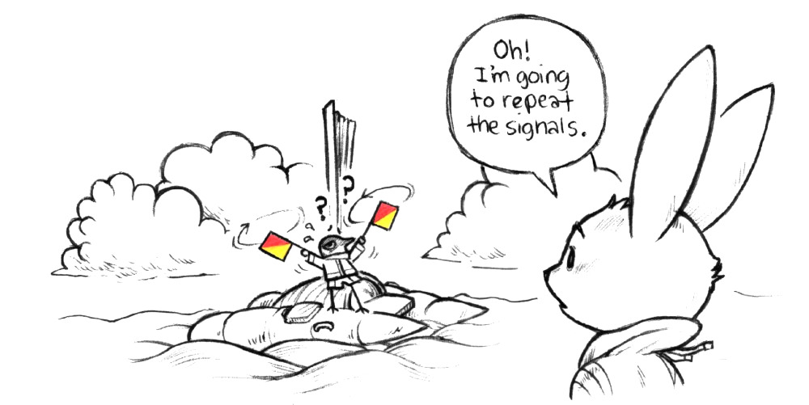

Phonetic Alphabet. Alfa : Al fah, Bravo : Brah voh, Charlie : Char Lee, Delta : Dell tah, Echo : Eck oh, Foxtrot : Foks trot, Golf, Hotel : Hoh tel, India : In dee ah, Juliet : Jee lee ett, Kilo : Key loh, Lima : Lee mah, Mike, November : Novem ber, Oscar : Oss cah, Papa: Pah pah, Quebec : Keh Beck, Romeo : Row me oh, Sierra : See air rah, Tango : Tan go, Uniform : Oo nee form, Victor : Vik tah, Whiskey : Wiss key, X-ray : Ecks ray, Yankee : Yang kee, Zulu : Zoo loo, 1st substitute, 2nd substitute, 3rd substitute, Answering penant or decimal point, 1 : Unaone : Oo nah wun, 2 : Bissotwo : Bee soh too, 3 : Terratree : Tay rah tree, 4 : Kartefour : Kar tay fower, 5 : Pantafive : Pan tah five, 6 : Soxisix : Sok see six, 7 : Setteseven : Say tay seven, 8 : Oktoeight : Ok toh ait, 9 : Novenine : No vay niner, 0 : Nadazero : Nah dah zay roh

Morse signaling by hand flags or arms : dash, dot, separation of dots and dashes, separation of letters/groups/words, request for repetition if by the receiving station or erase signals if made by the transmitting station. Allow for enough time between dots and dashes and between letters, groups, or words.
I'm going to repeat the signals.